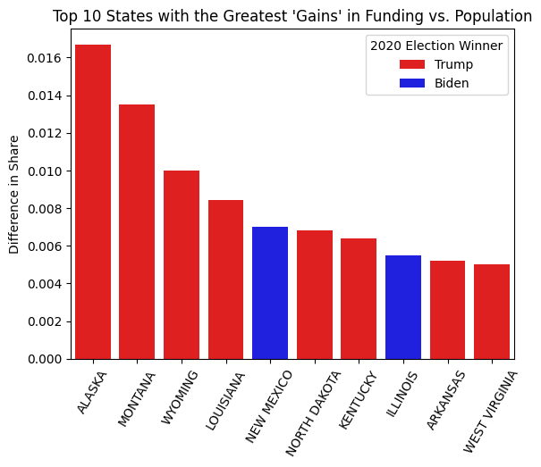
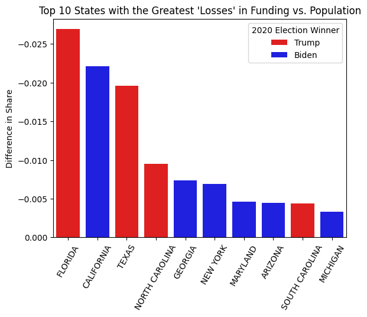
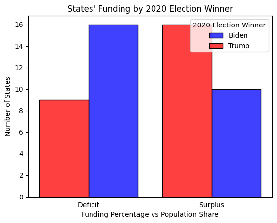

import pandas as pd
import numpy as np
# Import the IIJA data
iija_raw = pd.read_excel("story1data.xlsx")
# Import the population data
population_raw = pd.read_excel("https://www2.census.gov/programs-surveys/popest/tables/2020-2024/state/totals/NST-EST2024-POP.xlsx")
# Import the election data
election_raw = pd.read_excel("https://www.fec.gov/documents/4228/federalelections2020.xlsx", sheet_name=8)Infrastructure Investment and Jobs Act Funding Allocation
DATA 608 Spring 2025 - Story 1
# Check to confirm the imports
print(iija_raw.head(3))
print(population_raw.head(3).iloc[:, 0:3])
print(election_raw.head(3).iloc[:, 0:3])# Rename the columns in the IIJA data for clarity
iija = iija_raw.copy()
iija.columns = ['state', 'funding_billions']# Clean up the population data
# select rows 8 to 60 and columns 0 and 6 for the 2024 population data for each state
population = population_raw.iloc[8:60, [0, 6]]
# strip the "." from column 0 and capitalize the strings to match the IIJA data
population.iloc[:, 0] = population.iloc[:, 0].str.strip(".").str.upper()
# rename the columns for merging
population.columns = ['state', 'population']
# join to the iija data frame on the state column
df = iija.merge(population, on="state", how="outer")
print(df.head()) state funding_billions population
0 ALABAMA 3.0000 5157699.0
1 ALASKA 3.7000 740133.0
2 AMERICAN SAMOA 0.0686 NaN
3 ARIZONA 3.5000 7582384.0
4 ARKANSAS 2.8000 3088354.0# Clean up the election data
# select columns 2, 6, and 11 for the state, candidate, and vote percentage
election = election_raw.iloc[:, [2, 6, 11]]
# rename columns for clarity
election.columns = ['state', 'candidate', 'vote_pct']
# drop rows where candidate is not Biden or Trump
election = election[election.candidate.isin(['Biden', 'Trump'])]
# pivot the data for merging
election = election.pivot_table(index="state", columns="candidate", values="vote_pct").reset_index()
# capitalize the state column
election['state'] = election['state'].str.upper()
# merge the election data with the new data frame
df = df.merge(election, on="state", how="left")
print(df.head()) state funding_billions population Biden Trump
0 ALABAMA 3.0000 5157699.0 0.365700 0.620316
1 ALASKA 3.7000 740133.0 0.427720 0.528331
2 AMERICAN SAMOA 0.0686 NaN NaN NaN
3 ARIZONA 3.5000 7582384.0 0.493647 0.490560
4 ARKANSAS 2.8000 3088354.0 0.347751 0.623957# Fix the Delaware typo - select the value and drop the misspelled row
df.iloc[8, 1] = df.iloc[9, 1]
df.drop([9], inplace=True)
print(df.head(10)) state funding_billions population Biden Trump
0 ALABAMA 3.0000 5157699.0 0.365700 0.620316
1 ALASKA 3.7000 740133.0 0.427720 0.528331
2 AMERICAN SAMOA 0.0686 NaN NaN NaN
3 ARIZONA 3.5000 7582384.0 0.493647 0.490560
4 ARKANSAS 2.8000 3088354.0 0.347751 0.623957
5 CALIFORNIA 18.4000 39431263.0 0.634844 0.343203
6 COLORADO 3.2000 5957493.0 0.553995 0.418979
7 CONNECTICUT 2.5000 3675069.0 0.592607 0.391871
8 DELAWARE 0.7920 1051917.0 0.587430 0.397749
10 DISTRICT OF COLUMBIA 1.1000 702250.0 0.921497 0.053973# Prepare the data for plotting
df_plt = df.copy()
# calculate the share of funding and population for each state
df_plt['funding_pct'] = df_plt['funding_billions'] / df_plt['funding_billions'].sum()
df_plt['population_pct'] = df_plt['population'] / df_plt['population'].sum()
# calculate the difference in share between funding and population
df_plt['diff_pct'] = df_plt['funding_pct'] - df_plt['population_pct']
# assign a victor for each state based on the higher percentage of votes
df_plt['2020_victor'] = np.where(df_plt['Biden'] > df_plt['Trump'], 'dem', 'rep')
# assign a category for if the diff_pct is positive (state has more funding relative to population)
# or negative (state has less funding relative to population)
df_plt['funding'] = np.where(df_plt['diff_pct'] > 0, 'surplus', 'deficit')
# sort the data frame by the difference in funding and population percentages
df_plt = df_plt.sort_values("diff_pct")
# drop any rows with missing values in the diff_pct column
# This removes the territories, which do not vote in the presidential election anyway.
df_plt = df_plt.dropna(subset=["diff_pct"])
print(df_plt.head(25)) state funding_billions population Biden Trump \
11 FLORIDA 8.2000 23372215.0 0.478615 0.512198
5 CALIFORNIA 18.4000 39431263.0 0.634844 0.343203
48 TEXAS 14.2000 31290831.0 0.464790 0.520576
36 NORTH CAROLINA 4.5000 11046024.0 0.485862 0.499344
12 GEORGIA 5.0000 11180878.0 0.494731 0.492375
35 NEW YORK 10.1000 19867248.0 0.304339 0.188700
23 MARYLAND 2.7000 6263220.0 0.653607 0.321503
3 ARIZONA 3.5000 7582384.0 0.493647 0.490560
45 SOUTH CAROLINA 2.3000 5478831.0 0.434301 0.551103
25 MICHIGAN 5.2000 10140459.0 0.506208 0.478373
26 MINNESOTA 2.7000 5793151.0 0.523951 0.452849
56 WISCONSIN 2.8000 5960975.0 0.494495 0.488224
17 INDIANA 3.4000 6924275.0 0.409631 0.570306
54 WASHINGTON 4.0000 7958180.0 0.579703 0.387670
53 VIRGINIA 4.5000 8811195.0 0.541095 0.439955
24 MASSACHUSETTS 3.6000 7136171.0 0.656001 0.321419
47 TENNESSEE 3.7000 7227750.0 0.374514 0.606603
33 NEW JERSEY 5.1000 9500851.0 0.573343 0.413964
39 OHIO 6.6000 11883304.0 0.452393 0.532713
6 COLORADO 3.2000 5957493.0 0.553995 0.418979
51 UTAH 1.8000 3503613.0 0.376460 0.581298
19 KANSAS 1.5000 2970606.0 0.415086 0.561437
31 NEVADA 1.7000 3267467.0 0.500568 0.476662
41 OREGON 2.3000 4272371.0 0.564533 0.403672
32 NEW HAMPSHIRE 0.7518 1409032.0 0.527083 0.453557
funding_pct population_pct diff_pct 2020_victor funding
11 0.041830 0.068719 -0.026890 rep deficit
5 0.093862 0.115936 -0.022074 dem deficit
48 0.072437 0.092002 -0.019565 rep deficit
36 0.022955 0.032478 -0.009522 rep deficit
12 0.025506 0.032874 -0.007368 dem deficit
35 0.051522 0.058414 -0.006892 dem deficit
23 0.013773 0.018415 -0.004642 dem deficit
3 0.017854 0.022294 -0.004440 dem deficit
45 0.011733 0.016109 -0.004376 rep deficit
25 0.026526 0.029815 -0.003289 dem deficit
26 0.013773 0.017033 -0.003260 dem deficit
56 0.014283 0.017527 -0.003243 dem deficit
17 0.017344 0.020359 -0.003015 rep deficit
54 0.020405 0.023399 -0.002994 dem deficit
53 0.022955 0.025907 -0.002951 dem deficit
24 0.018364 0.020982 -0.002618 dem deficit
47 0.018874 0.021251 -0.002377 rep deficit
33 0.026016 0.027935 -0.001918 dem deficit
39 0.033668 0.034939 -0.001272 rep deficit
6 0.016324 0.017516 -0.001192 dem deficit
51 0.009182 0.010301 -0.001119 rep deficit
19 0.007652 0.008734 -0.001082 rep deficit
31 0.008672 0.009607 -0.000935 dem deficit
41 0.011733 0.012562 -0.000829 dem deficit
32 0.003835 0.004143 -0.000308 dem deficit The first plot demonstrates the differences between the funding and population percentages for the 10 states with greatest positive differences, or surpluses. Each state is colored by its winner for the 2020 presidential election.
import seaborn as sns
import matplotlib.pyplot as plt
pos = sns.barplot(
data=df_plt.tail(10),
x="state",
y="diff_pct",
hue="2020_victor",
palette={"dem": "blue", "rep": "red"},
)
plt.xticks(rotation=60)
plt.ylabel("Difference in Share")
plt.xlabel("")
plt.title("Top 10 States with the Greatest 'Gains' in Funding vs. Population")
legend = pos.legend(title="2020 Election Winner")
legend.texts[0].set_text("Trump")
legend.texts[1].set_text("Biden")
plt.gca().invert_xaxis()
plt.show()
The second plot shows the same gap between funding and population percentages, but for the 10 states with largest negative differences, or deficits, along with how the state voted.
neg = sns.barplot(
data=df_plt.head(10),
x="state",
y="diff_pct",
hue="2020_victor",
palette={"dem": "blue", "rep": "red"},
)
plt.xticks(rotation=60)
plt.ylabel("Difference in Share")
plt.xlabel("")
plt.title("Top 10 States with the Greatest 'Losses' in Funding vs. Population")
legend = neg.legend(title="2020 Election Winner")
legend.texts[0].set_text("Trump")
legend.texts[1].set_text("Biden")
plt.gca().invert_yaxis()
plt.show()
Is the allocation equitable based on the population of each of the States and Territories, or is bias apparent?
There is a noticeable bias in the allocation of funds against states that were won by Joe Biden in the 2020 election. These states tend to have a higher percentage of the overall population and received a lower percentage of the funds.
Does the allocation favor the political interests of the Biden administration?
This could indicate that the allocation was meant to favor the interests of the Biden administration for a future election (but he did not run). It could also indicate the opposite - that the allocation had a negative effect on states that voted for him in that 2020 election.
For an even simpler comparison, this histogram shows the number of surplus and deficit states and how they voted.
h = sns.histplot(
data=df_plt,
x="funding",
hue="2020_victor",
multiple="dodge",
shrink=0.8,
palette={"dem": "blue", "rep": "red"},
)
plt.xlabel("Funding Percentage vs Population Share")
h.set_xticks([0, 1])
h.set_xticklabels(["Deficit", "Surplus"])
plt.ylabel("Number of States")
plt.title("States' Funding by 2020 Election Winner")
plt.legend(title="2020 Election Winner", labels=["Biden", "Trump"])
plt.show()
3 Minute Story
Using data from the IIJA on fund allocation, the US Census Bureau for population estimates and the FEC for election results, I examined whether states received funding in proportion to their population election results, and if the 2020 election results had any effect. Using the Python visualization library Seaborn, I created simple bar plots and a histogram that showed the differences very clearly. In general, states that received less funding compared to their population share tended to vote for Biden in 2020. States that received more funding relative to their size were more likely to have supported his opposition. There could be many complex reasons for this disparity, and also many implications now that we are past the 2024 elections.
Big Idea
I visualized how states that received less funding relative to their share of the country’s population tended to vote for Biden in the previous election.